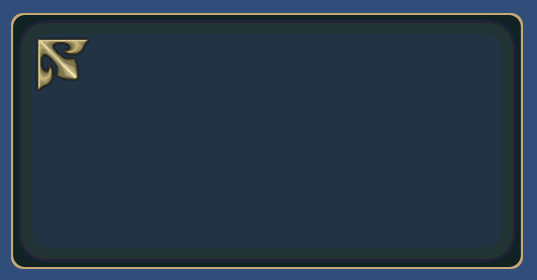

TEXTURE¶
C#: CWinCtrlTextureテクスチャパーツを表示するためのコントロールです。
最大8枚まで重ねて表示することが可能です。
デフォルトでは、押したことを検出できません。 コールバックが必要なときは、STYLEにHITを指定してください。
TEXTURE(コントロール名) {
プロパティ1;
プロパティ2;
:
:
プロパティn;
};
記述例¶
WINDOW(255_000_00001) {
STYLE = NOTITLEBAR|ANCHOR_CENTER;
POSITION = 0,-100;
TEX_ID = 100_000_00001;
TEXTURE_ZOFFSET = 100_010_00000,1;
SIZE = 512,256;
};
TEXTURE(DecoLeft) {
ID = 000_000_00040;
STYLE = NOHIT;
TEX_ID = 100_010_00000,"DECOL";
POSITION = 24,-24;
};

プロパティ¶
代表的なデフォルト値¶
COLOR = 1,1,1,1;
CAPTION_COLOR = 1,1,1,1;
SE_ID = 0;
TEX_ID = テクスチャID,パーツID¶
TEX_ID = パーツID¶
テクスチャIDとパーツIDを指定します。
TEX_ID n = テクスチャID,パーツID¶
TEX_ID n = パーツID¶
テクスチャIDとパーツIDを指定します。
n = [0..7]で指定可能です。
n = 0の時は、TEX_IDと同じテクスチャを操作します。
TEXTURE_OFFSET n = オフセットX,オフセットY¶
テクスチャの表示オフセットを指定します。
n = [0..7]で指定可能です。
SIZE = 横サイズ,縦サイズ¶
表示サイズを変更します。 省略したとき、若しくは、0を指定すると、テクスチャパーツからサイズを取得してきます。
SIZE = 64,32; //64x32
SIZE = ,32; //Set the width of the texture part width
SIZE = 64; //Set the height of the texture part height
TEXTURE_SIZE n = 横サイズ,縦サイズ¶
テクスチャIDとパーツIDを指定します。
n = [0..7]で指定可能です。
n = 0の時は、 SIZE と同じ意味です。
TEXTURE_SIZE1 = 64,32; //64x32
TEXTURE_SIZE2 = ,32; //Set the width of the texture part width
TEXTURE_SIZE3 = 64; //Set the height of the texture part height
COLOR = R,G,B,A¶
カラーを指定します。
R,G,Bについては、0～2の間で指定してください。
1を超えたとき、そのカラー成分を2倍まで上げて表示することができます。
Aについては、0～1の間で指定してください。
COLOR n = R,G,B,A¶
カラーを指定します。
R,G,Bについては、0～2の間で指定してください。
1を超えたとき、そのカラー成分を2倍まで上げて表示することができます。
Aについては、0～1の間で指定してください。
n = [0..7]で指定可能です。
n = 0の時は、 COLOR と同じプロパティです。
SE_ID = SE_ID¶
押されたときに鳴らす音のIDを設定します。 デフォルトは、0になっており、音がなりません。
STYLE = フラグ0|フラグ1|..|フラグn¶
コントロールの表示アンカーを指定できます。
| 表示位置アンカーフラグ | 説明 |
|---|---|
| ANCHOR_DEFAULT | アンカー位置を左上に設定 ANCHOR_LEFTTOPと同じ コントロールの中心位置はデフォルトで、BASE_LEFTTOPになる。 |
| ANCHOR_LEFTTOP | アンカー位置を左上に設定 コントロールの中心位置はデフォルトで、BASE_LEFTTOPになる。 |
| ANCHOR_LEFT | アンカー位置を左に設定 縦にはセンタリング コントロールの中心位置はデフォルトで、BASE_LEFTになる。 |
| ANCHOR_LEFTBOTTOM | アンカー位置を左に設定 縦には下辺を基準に配置 コントロールの中心位置はデフォルトで、BASE_LEFTBOTTOMになる。 |
| ANCHOR_TOP | アンカー位置を上辺に設定 横方向にはセンタリング コントロールの中心位置はデフォルトで、BASE_TOPになる。 |
| ANCHOR_CENTER | アンカー位置を画面中央にセンタリング コントロールの中心位置はデフォルトで、BASE_CENTERになる。 |
| ANCHOR_BOTTOM | アンカー位置を底辺に設定 横方向にはセンタリング コントロールの中心位置はデフォルトで、BASE_BOTTOMになる。 |
| ANCHOR_RIGHTTOP | アンカー位置を右上に設定 コントロールの中心位置はデフォルトで、BASE_RIGHTBOTTOMになる。 |
| ANCHOR_RIGHT | アンカー位置を右に設定 縦にはセンタリング コントロールの中心位置はデフォルトで、BASE_RIGHTになる。 |
| ANCHOR_RIGHTBOTTOM | アンカー位置を右に設定 縦には下辺を基準に配置 コントロールの中心位置はデフォルトで、BASE_RIGHTBOTTOMになる。 |
コントロールの中心位置を指定できます。
| 中心位置変更フラグ | 説明 |
|---|---|
| BASE_DEFAULT | アンカーフラグに応じて変わる。 特に指定しなければ、これになります。 各アンカーフラグの説明を参照 |
| BASE_LEFTTOP | 中心位置をコントロールの左上に設定 |
| BASE_LEFT | 中心位置を左に設定 縦にはコントロールの真中 |
| BASE_LEFTBOTTOM | 中心位置を左下に設定 |
| BASE_TOP | 中心位置を上辺に設定 横にはコントロールの中心 |
| BASE_CENTER | 中心位置をコントロールの中心 |
| BASE_BOTTOM | 中心位置を底辺に設定 横方向にはコントロールの真中 |
| BASE_RIGHTTOP | 中心位置をコントロールの右上に設定 |
| BASE_RIGHT | 中心位置を右に設定 横にはコントロールの中心 |
| BASE_RIGHTBOTTOM | 中心位置を右下に設定 |
機能を制限するスタイルは以下のものがあります。
| 機能制限スタイル | 説明 |
|---|---|
| HIDE | 表示を隠す。 |
| DRAG | ドラッグ可能にする。 |
| DISABLE | 押せなくし、暗くする。 |
| HIT | 押せるようにする。 |